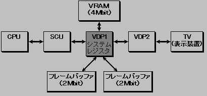
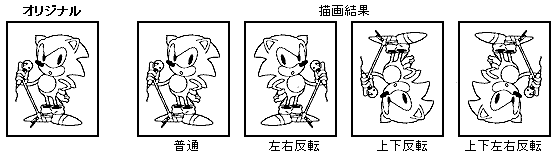
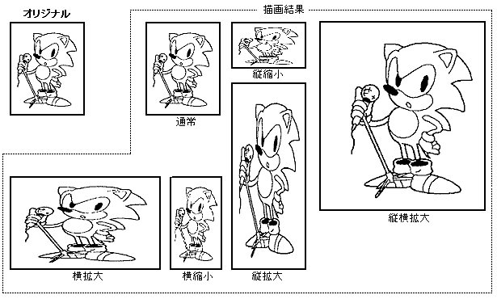
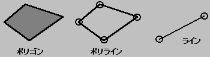
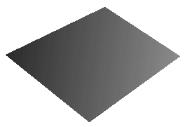
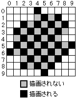
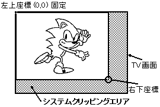
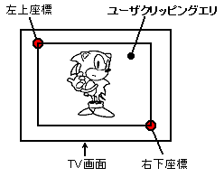

★HARDWARE Manual
★セガサターン概要マニュアル
★HARDWARE Manual
★セガサターン概要マニュアル
図3.2 VDP1システム構成

No | 項 目 | 仕 様 | 備 考 |
1 | テクスチャパーツ表示 | ・定形スプライト | 全てのスプライトで上下左右反転 |
2 | ノン・テクスチャ | ・四角形ポリゴン | 隣接の2頂点を同一座標にすれば |
3 | 色演算 | ・パーツ同士の半透明 | グーローシェーディングと半透明 |
4 | 描画方式 | ・ダブルフレームバッファ方式 | |
5 | 同時発色数 | ・16,64,128,256,32768色 | ハイレゾ時は16,64,128,256色 |
6 | メモリ容量 | ・VRAM 4Mbit |
分 類 | パーツ名 | 機 能 | 定 義 方 法 | |
パーツ | テクスチャパーツ | 定形スプライト | キャラクタ、 | 1頂点の読み出し方向 |
拡縮スプライト | キャラクタ、 | 2頂点の読み出し方向、または不動 | ||
変形スプライト | キャラクタ、 | 4頂点の読み出し方向 | ||
ノン・テクスチャパーツ | ポリゴン | 四角形、 | 4頂点 | |
ポリライン | 四角形 | 4頂点 | ||
ライン | 直線 | 始点と終点 | ||
図3.3 定形スプライト

図3.4 拡縮スプライト

▲
◆ノン・テクスチャパーツ
図3.6 ポリゴン、ポリライン、ライン

▲
●カラーモード指定
テクスチャパーツのカラーモード指定には、カラーバンク方式、RGBコード方式、またはカラールックアップ方式があります。ノン・テクスチャパーツのカラー指定には、ピクセルのデータがあります。
図3.7 カラーバンク方式の構成
ＭＳＢ ＬＳＢ
┌──┬──┬──────┬───────────┐
│ │ │カラーバンク│ パレットコード │
└──┴──┴──────┴───────────┘
│ │
│ └─→プライオリティー
↓
色演算
▲
●色演算
VDP1では、グーローシェーディング、シャドゥ、半輝度、半透明の色演算を指定できます。
表3.5に色演算の種類を示します。
種 類 | 内 容 |
半輝度 | 元絵の輝度を半分にしたものを、フレームバッファに描画します。下地に |
半透明 | 下地の輝度を半分にしたものと、元絵の輝度を半分にしたものを加算し、 |
シャドゥ | 下地の輝度を半分にしたものを、フレームバッファに再描画します。この |
グーローシェーディング | 元絵にグーローシェーディングを掛けたものを、フレームバッファに描画 |
グーローシェーディング | 元絵にグーローシェーディングを掛けたものの輝度を更に半分に落とし、 |
グーローシェーディング | 元絵にグーローシェーディングをかけたものの輝度を更に半分に落とし、 |
◆グーローシェーディング
RGBで描かれたパーツに対してのみ、グーローシェーディングを掛けることができます。
グーローシェーディングは、ポリゴンの頂点間で色を補間して、平面を曲面らしく見せる方法です。
ポリゴンの4頂点にそれぞれ輝度補正値を与え、それら4頂点の間でグーローシェーディングを掛けることにより曲面らしく見せています。またポリゴンだけでなく、ポリライン、ライン、にもグーローシェーディングを掛けることができます。
図3.8にグーローシェーディングの例を示します。
図3.8 グーローシェーディングの例

▲
●メッシュ処理
全てのパーツに対してメッシュを掛けることができます。メッシュを掛けると、
そのパーツは1ドットおきに格子状に描画されます。
「Ｘ座標値＋Ｙ座標値」が偶数の場合は描画され、奇数の場合は描画されずスキップされます。(図3.9)
図3.9 メッシュ処理の例

▲図3.10 システムクリッピング

図3.11 ユーザクリッピング

▲
●フレームバッファ
フレームバッファは、表示フレームバッファと描画フレームバッファの2面に分かれます。
SCUからフレームバッファへのリード／ライトアクセスは、描画フレームバッファに対してのみ行われます。
表示フレームバッファは、裏バンクとなり、アクセスすることはできません。
またフレームバッファを読み出すことにより、読み出し開始座標と次の読み出しドットは、
どこにするかを指定するX,Y方向の変位を与えることで、フレームバッファ平面全体を拡大、縮小、回転させることができます。
▲
●表示方式
表示は、一般的なディスプレイ装置であるTVを使います。国内とアメリカのTV規格はNTSC方式です。
ヨーロッパはPAL方式です。
TVの表示は、フレーム(1フレームは1/60秒)ごとにフレームバッファの先頭からデータを読み出されて行われます。
通常1フレームは1フィールドですが、インタレースで1フレームを2フィールドにして、縦の解像度を2倍(1フレームは1/30秒)にすることができます。インタレースには、
表3.6のように倍密インタレースと単密インタレースがあります(表3.6)。
倍密インタレース | 奇数ライン、偶数ラインで別画像を表示 |
単密インタレース | 奇数ライン、偶数ラインで同じ画像を表示 |
★HARDWARE Manual
★セガサターン概要マニュアル